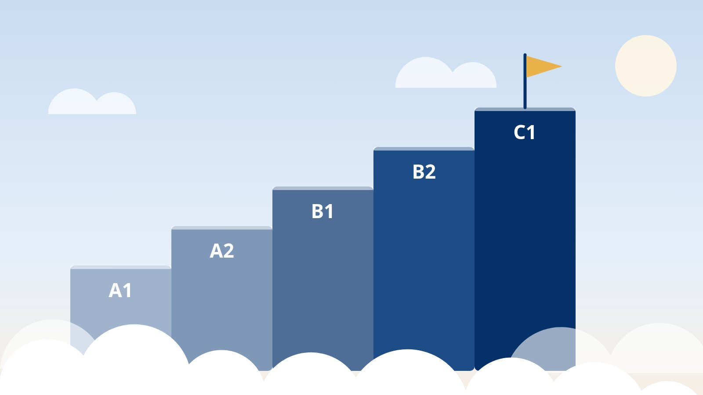

My German Certificate Journey
From Goethe A1 to DSH-2
Four Goethe levels passed, one Goethe C1 attempt unsuccessful, a telc pass on the first try, and DSH-2 at the third attempt in Aachen.
Audio narration · computer-generated voice

Learning German involved a long series of examinations. I passed many of them, failed some, and in one case needed three attempts at the same examination. This post records the results as they are.
The following is a short summary.
- I passed the Goethe-Zertifikat examinations A1, A2, B1 and B2.
- I took the Goethe C1 examination once, in Munich, and failed every part.
- I passed telc Deutsch C1 Hochschule on my first attempt, with a moderate result.
- I took the DSH at FH Aachen three times. The first two attempts resulted in DSH-1, and the third resulted in DSH-2.
- I took the DSH once at the Universität Duisburg-Essen and did not pass.
The Goethe Examinations: A1 to B2
The Goethe-Zertifikat examinations are organised by level. A1 is the first level, and each following level (A2, B1 and B2) builds on the previous one. I passed all four, at four different centres:
- B1 (2023): Goethe-Institut Peking and Goethe-Jinchuang Language Centre Shanghai.
- A1 (2024): Goethe-Institut Düsseldorf.
- B2 (2024): Goethe-Institut Peking.
- A2 (2025): Goethe-Institut München.
The list follows the dates on my certificates, so the years do not run in the order of the levels. For the examinations in China, I travelled back and forth between Qingdao, Beijing and Shanghai.
I describe the B2 examination in most detail. I took it at the Goethe-Institut Peking in February 2024; the certificate gives the exact date as 21 February 2024. The four modules are Reading, Listening, Writing and Speaking, and each one is scored out of 100 points. My scores were 70 for Reading, 63 for Listening, 63 for Writing and 62 for Speaking.
A module counts as passed at 60 points, so my lowest score, in Speaking, was two points above the pass mark.
The Unsuccessful Attempt: Goethe C1 in Munich
The next level is C1, and this is where my series of Goethe passes ended.
I took the Goethe C1 examination once, in Munich. I failed all parts, and the certificate was not awarded.
telc Deutsch C1 Hochschule: Passed on the First Try
I later took a different C1 examination, telc Deutsch C1 Hochschule, and passed it on my first attempt.
The examination date was 12 September 2024. I scored 163 out of 214 points in total, with 127 out of 166 in the written part and 36 out of 48 in the oral part. The grade on the certificate is Befriedigend, which is a moderate result.
It is not an outstanding result, but it is a pass at level C1.
The DSH: Three Attempts in Aachen, One in Duisburg-Essen
DSH stands for Deutsche Sprachprüfung für den Hochschulzugang, the German language examination for university admission.
I took the DSH at FH Aachen three times. The first two attempts resulted in DSH-1. The third attempt, on 16 September 2024, resulted in DSH-2, four days after the telc examination. According to the certificate, DSH-2 shows the language ability needed for unrestricted admission to all degree programmes at all universities. In the written part my results were 66.5, 90, 69 and 57 percent in the four sections, and in the oral part I got 67 percent. The certificate itself is dated 2 October 2024.
I also took the DSH once at the Universität Duisburg-Essen, and I did not pass there.
What I Take From It
This account is not intended as a guide, since learners differ. These are only my own conclusions from the record above.
Examinations require technique. Examinations such as the DSH and the C1 examinations test reading, writing and grammar in a targeted way, and each part has its own format and strategy. Practising those parts specifically is therefore necessary in addition to general language ability.
Written German and spoken German differ. The written, academic German of an examination differs noticeably from the German that people speak in everyday life. Preparing for one does not automatically prepare for the other.
Everyday German comes from communication. My own method was simple: I listened a lot and I spoke a lot. For daily life, German grows from listening, speaking and communicating with people.
There is no shortcut. The Goethe C1 examination was unsuccessful, the DSH needed three attempts in Aachen, and one attempt in Duisburg-Essen did not succeed. The DSH-2 came on the third attempt in Aachen. Success comes after failure. A further attempt was always possible.
In total, I hold four Goethe certificates (A1 to B2), a telc Deutsch C1 Hochschule certificate and a DSH-2 certificate. One Goethe C1 attempt and one DSH attempt at the Universität Duisburg-Essen were unsuccessful, and two DSH attempts at FH Aachen resulted in DSH-1.
There was no shortcut, and the record above is accurate.
C1 is not the finish line, and neither is C2. Learning never ends.